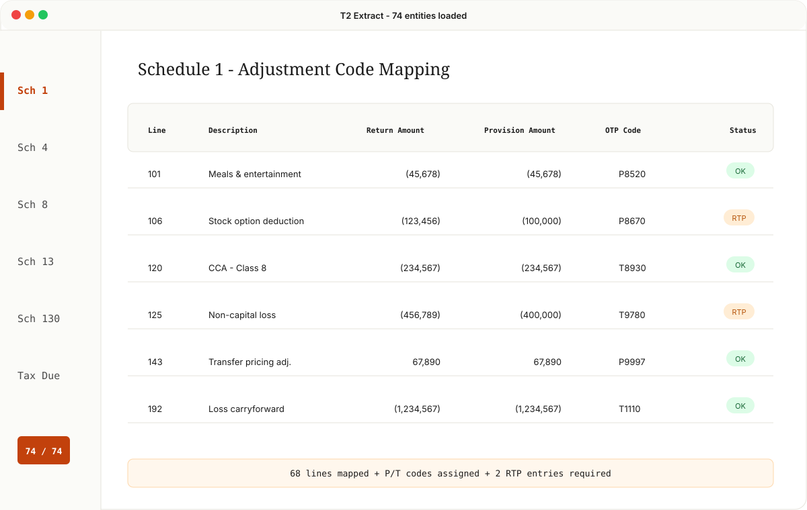
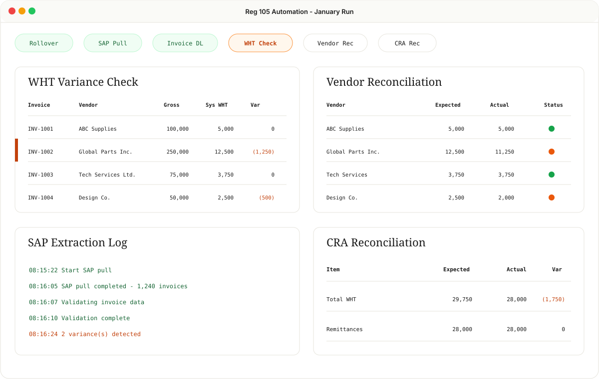
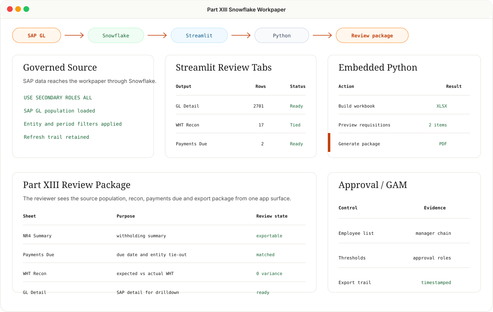
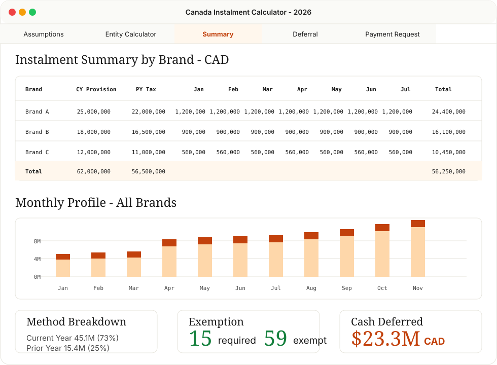
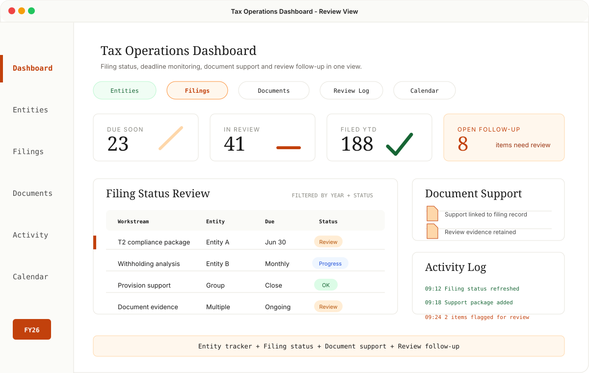
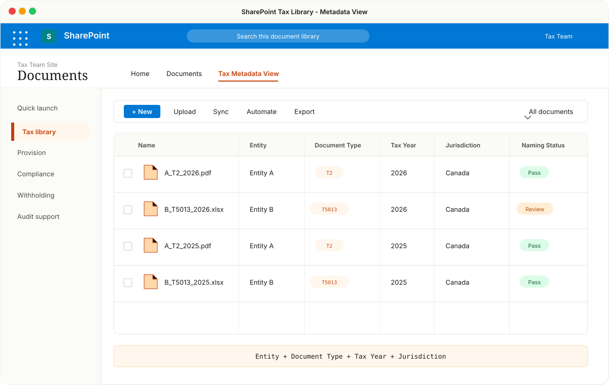

Better tax work starts with consistent inputs.
I improve recurring tax processes by making source data easier to review, reconciliations easier to follow and outputs more reliable for close, filing and audit support.

scroll
I improve recurring tax processes by making source data easier to review, reconciliations easier to follow and outputs more reliable for close, filing and audit support.
T2 return data reviewed consistently for RTP and provision support.
Standardized review of T2 corporate return data across a large entity portfolio, with key return items tied into OneSource Tax Provision workpapers. The result is faster RTP review with clearer support for each adjustment.

Reg 105 withholding reviewed from source data through CRA reconciliation.
Enhanced Regulation 105 withholding review by standardizing source data, invoice review and reconciliation steps. This reduced manual handling and made variances easier to identify before remittance and reporting.

Part XIII withholding workpaper review supported by clearer data pickup and reconciliation.
Improved the Part XIII withholding workpaper process by carrying forward prior period structure, using GL detail consistently and applying Power Query logic to identify line items requiring WHT review.

Multi-entity instalment review with consistent method selection and cash tax visibility.
Enhanced the recurring instalment review across a large entity portfolio by aligning tax return data, provision inputs and provincial allocation support in one reviewable workbook.

Centralized view of filing status, deadlines, documents and review follow-up across an entity portfolio.
Created a tax operations dashboard to make recurring compliance work easier to monitor and review. It brings filing status, deadlines, support documents and activity history into one organized view, using neutral entity and filing metadata that can scale across multiple tax processes.

SharePoint tax files organized by metadata and naming standards so support can be retrieved faster.
Improved the SharePoint tax document structure by moving from deeply nested folders to a flatter library supported by consistent metadata, auto-tagging and naming conventions. This made recurring workpapers, support files and review evidence easier to find and easier to maintain.

Used selectively to improve recurring data preparation, reduce manual rework and support consistent review files.
Used to support recurring GL extracts and report downloads for review and reconciliation.
Used to standardize spreadsheet data, combine recurring extracts and support review-ready outputs.
Used for document routing, SharePoint metadata updates and scheduled refreshes that support recurring tax work.